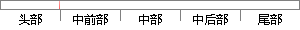

点击选择如图1-18所示标准A3图纸，在设置里选择毫米，选择第一角投影。
片段位置图

相似结果|
相似片段 1：，在对话框中输入模板名称“A4-纵向”，选择投影类型为“第一视角”，选择标准图纸大小 A4（210×297），点击确定完成属性设置。如图 4-28所示。图 4-28工程图图纸属性设置2）属性链接
相似片段 2：『究(2)设置图纸属性在图纸中右击鼠标并从快捷菜单中选择【属性】命令，打开图纸属性设置的界面，按照我国的国标标准对图纸的属性进行设置，国内的图纸一般采用三视图、以第一视角为投影类型。(3)制作工程图图框如图2-9所示，在图纸中右击鼠标，从快捷菜单中选择【编辑图纸格式】命令，切换剑编辑图纸格式状态下。
相似片段 3：，在选择界面中有多种工程图模板，选择图纸大小为A2 的标准工程图模板，点击 “确定”进入工程图，如图 3.30 所示。图 3.30 SolidWorks 新建工程图2．设置图纸属性在设计树中的图纸右击
相似片段 4：右键，进入工程图格式编辑，然后点击右键并选择属性，打开属性栏可以在投影类型中进行视角、投影类型及图纸格式的选择，设置好后点击文件，选保存图纸格式，如图4．5所示。
相似片段 5：，一般选用 A4 大小的纸张即可。对于图纸的横向、纵向选择，用户可根据自己的喜好进行选择。投影方法这一栏中，我国一般使用第一角投影法标准。点击“激活”按钮，用户可自定义打印区域的宽度和高度。40图
|
※ 片段修改建议 ※
近似词参考：- 标准：尺度
系统自动生成语句：点击选择如图1-18所示尺度A3图纸，在设置里选择毫米，选择第一角投影。
注：本片段修改建议为系统自动生成，仅供参考。